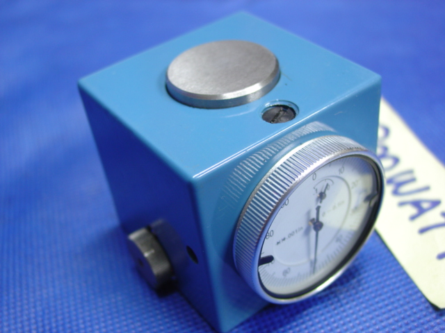
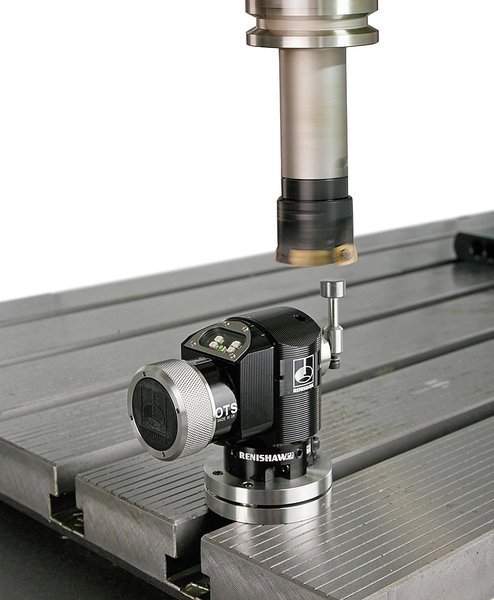

CNC depends a lot on accurate tool data. By tool data, I mean length and diameter information, which is critical to any CNC machine. The controller needs to know how long your tool is relative to some standard such as the "gage line", and it is often nice to know exactly what the tool's diameter is as well, since tool diameters fall within a certain tolerance that may affect the accuracy of your parts.
There are lots of ways to manage this data ranging from ad hoc just-in-time methods to more elaborate systems that involve tool presetters, tool setters on the machine, and potentially even tool management software. If you're running a shop, you'd obviously like to minimize the cost of managing the tool data as well as minimizing the chances the wrong data is in use when a part program is run. Just imagine what happens if the tool is actually an inch longer than what the controller thinks it is--CRASH!!!!
In shops with more than one machinist, it's also vitally important that the whole shop be on the same page with respect to how this information is managed. Otherwise, one machinist will do things one way, and the next machinist to try to run the job on the machine will do things another, and we may once again have a CRASH!!!!
Picking Up the Tool Length Offset
Let's focus on tool length data, and moreover, let's start out on the dead simple end of the spectrum. How do we go about getting the length offset?
The simplest way is to take a gage block of known dimensions, put the tool in the spindle, and start to lower the tool until you can no longer slide your gage block under the tool. Note that you don't want to just lower the tool onto the gage block--bad for tool and gage block alike! Instead pull the gage block out of the way each time, lower the tool, and then attempt to slide it back under. With this method you can determine exactly how far the tip of the tool is from whatever your gage block is resting on--vise jaw, machine table, or top of the part. You would then use this information to determine your tool length relative to some standard, and you'd enter that into the tool table on your controller.
Another method is the paper touch off. Originally this was done with cigarette rolling papers, because they're very thin. I find it is convenient to use post-its, because they're in a pad that's about the right size. You want to stick the paper down between the touch off point and the whirling cutter using a little bit of oil. Lower the cutter until it makes the paper move. You'll be 0.002 - 0.005" or so above the touch off point, depending on your paper thickness. You want to use the same kind of paper every time so you can determine its thickness by experiment and thereby know how to correct the touch off for paper thickness. Let me state the obvious: the paper touch off and the automatic tool setter mentioned below are the only cases I know where the touch off is performed while the cutter is moving. In all other cases the spindle should be stopped!
There are endless variations on this method
Okay, the next step up is to use some form of measuring device or touch setter instead of a gage block. With this method, you're going to put an indicator of some kind down, and lower the tool onto the measuring pad or tip of the indicator until the indicator needle goes to zero. There are also electronic indicators that light up at the right point. Here is a typical inexpensive touch setter:

A typical inexpensive Z-Axis touch setter...
You can make a very nice touch setter by making a little stand that lets you set a dial indicator (plunger type) upside down. Bring the tool down to engage the plunger tip until you get to zero. Here is a typical video of a dial indicator touch off gage in use:
Positive or Negative Length Offsets?
You can set things up to work either way, but pick one and stick to it as your standard for your shop. Negative length offsets mean you're working "backward" from some reference on the table, fixturing (like a vise jaw) or part. Positive length offsets mean you're working "forward" from a fixed feature relative to your spindle. Positive offsets are often referred to as being relative to the "gage line". Gage line is a little more independent across machines, and is better suited to situations where the offsets will be preset, meaning they're determined off the machine before the tool is installed in the machine. The term "gage line" refers to a specific spot on the taper where tool zero is located by convention. For example, on a CAT40 taper, the maximum diameter of the taper is 1.75". On a CAT50, it's 2.75". It's straightforward to locate that spot and use it as tool zero on a tool holder.
The thing to standardize in a shop is where tool length zero is, and from there, whether positive or negative offsets will be used. BTW, there are pros and cons to positives and negatives and whether to reference relative to the longest or the shortest tool. For example, some people like negative offsets because if the offset table is cleared, then every offset is 0, you won't crash a tool. In other words, the negatives make the spindle move towards the work, less negative is further from the work. Negatives are often more natural when referencing via touch off. But there are some significant cons to using a negative standard:
1. It seems less "logical" to many because it works against the right hand rule coordinate system. The actions required to touch off are simple. But for anything more complex, you'll be scratching your head.
2. The touch off becomes problematic with fixturing moving around the table. Do you touch off the bare table? Do you touch off the fixed vise jaw? What happens when you put a different set of vise jaws in the vise, let alone remove the vise and use some other fixture? When that happens, all of your length offsets are now invalid because their reference has been moved. Gage line (positive tool offsets) are referenced relative to the spindle, and so can't change like that.
3. The aforementioned safety feature. If the tool offsets are zeroed, the machine just cuts air. If a minus sign is inadvertently forgotten and a positive value is entered, you just cut even more air. With positive offsets, if you enter a spurious minus, you get a crash.
People like gage line or positive offsets because:
1. Gauge length offset is "logical" (a long tool has a bigger offset value)
2. Can be measured out of the machine with some sort of presetter.
3. Literally can be used unchanged for years if the tool is an indexable face mill etc.
4. How do you "touch-off" a curved surface?
5. Is independent of fixturing on the table. With negative offsets, if you change or remove the fixtures, you've lost the touch off measuring point.
6. Let's you manage all the other offsets more intuitively, because they're not tied to the reference. For example, you may have measured your workpiece height offline with a height gage and want to mess with the offsets around that without affecting your tool length offsets. With negative offsets, you have to keep your calculator handy and really understand the interactions of the various offsets and part dimensions. Note that if you like to measure parts and fixtures offline, it is often convenient to make Z=0 your table, and use the work offsets to account for the height of the top of the part above the table. You could even set a height gage on the table or touch off with a probe to measure and set that work offset.
Most of the pros prefer gage line / positive length offsets because they're more productive through use of presetters and because you can carry the tooling around to any machine in a multi-machine shop and the offsets are constant regardless of the machine or the fixtures. The time spent touching off is completely eliminated with gage line offsets (or to be precise, it is shifted to a presetter and done once), and you can perform other tricks more easily.
Beginners find negative length offsets are great because the touch off is easy to understand, if not very reusable, and the percieved safety features of making a crash less likely.
There are some methods to add a little more safety to positive offsets. For example, a subprogram can check for positive offsets that are shorter than some minimum and halt the part program if any are encountered. This will prevent operation with zeroed or negative values quite easily, for example.
There are methods to add flexibility to a negative offset system. For example, if you use a toolsetter (see below) on your machine table, you don't have to worry about losing the touch off point because you change fixturing.
Okay, one last bit of confusion. You can convert from one system to the other, at least in principle.
Referencing Via Touch Off
Let's step away from gage line referencing for a minute and look at referencing via touch off. In this case, you're using the DRO or Axis readouts from your controller to tell you the position of the tip. For this procedure to work, you need a reference with which to zero the Axis readout. There are two approaches to this problem. One is to use an actual reference tool, the other is that the touch setter is precisely calibrated so that you know that when it zeros, you are exactly 2" (or some other value) above the surface the touch setter is resting on.
If you use a reference tool, set up your reference tool first and measure its tool length, and then zero the Z-axis. Now when you zero your other tools, the Axis readout will give you the tool length. For obvious reasons, you'd like your reference tool to be shorter than the other tools so that the tool length offsets come out positive. Even if your reference tool is quite long, it's just a matter of checking its length and then setting the Z-axis indicator to the appropriate value so that "zero" is in a place such all other tools have a positive length. For example, instead of zeroing with the reference tool, set a positive value that is always the same.
It's important not to use an actual cutter as the reference tool. If you cut with it, your reference may change as the tool wears. You might even consider using an empty toolholder (always the same one!) for that reason.
If you use a touch setter of known precise height, you can touch set a short tool and decide where you want zero to be. You might also touch set an empty tool holder to make the determination.
Positive Offset Touch Offs (aka Turn Your VMC into a Zillion Dollar Height Gage)
Let's say you've decided to use positive offsets, but you don't have a tool presetter. Or, you have the presetter and are using positive offsets, and you'd like to use your machine as a height gage to figure out the height of some feature on a fixture or part above your machine table. Both are straightforward.
There is some number that represents your gage line tool zero being on the table. In other words, the distance from the table to the gage line, which if you've defined it as I did above for the CAT tapers, is the spindle face. The point is to standardize this number for all your machines. Let's say you pick a value of 15" so that when the spindle face is touching the table, you have Z set to read 15".
How can we use this?
Start with measuring a positive tool table offset for a tool of unknown offset. Mount the tool and do a touch off on the table. The difference between your standard value for tool zero (15") and the touch off "Z" value is the tool table offset for that tool.
To use the machine as a height gage, enable the tool height offset for the tool you're probing with. Now the machine's Z readout is the same as a height gage readout relative to that probe tip!
Since you can now use your machine as a height gage, you can use it to measure the height of some feature, like a fixed vise jaw, that you want to use for tool length offset touchoffs because it is inconvenient o reach the table. Given the height of the feature, its easy to adjust the touch off to once again wind up with a positive tool length offset.
Are we getting too confusing yet? Probably. The important thing is to pick a standard method and then use it constantly until it is second nature. Master the simple stuff before you try to get fancy.
Work Offset Touch Off
Okay, let's assume you've got your tool table filled out with a bunch of tool offsets. Let's moreover assume you've used positive offsets. You want to make sure your work offset for Z is also properly set. One way to do this is to keep a "tool" that is an edge finder of some kind that can be used to find an exact position in Z. For example, you could mount a dial indicator in a tool holder, and make it your reference tool. Give it a position in the tool table. Give it a tool length offset that measures a positive offset when the dial is zeroed. Stick it in the machine. Select the reference tool's length offset. Bring it down until it zeros on the top of part, and then set your Z to whatever you want the top of part to be. Z=0 for top of part is very common so that any positive Z is inside the part. Z=height of part is also common. Either way, between having the correct work offset and the correct tool length offset, you machine can now precisely locate things in the Z dimension.
Here is a good intro from Tormach on how to put all of these concepts together in Mach3:
Probe-Style Touch Setters (also called Toolsetters)
The most sophisticated touch setters are based on probing-style technology, and are integrated with the machine's controller. These touch setters let you press a button and have the machine automatically probe the tool's length (and sometimes diameter), and then the data is automatically entered into the controller's tool table. Here is a typical tool setter:

Note how the probe is set up--we can both measure tool length by dropping down onto the probe tip, as well as diameter. Typically, the tool is spun in reverse at a slow speed while the measurement is being made. The reverse spin is so the tool doesn't cut the tool setter, and the rotation itself ensures the measurement of the lowest hanging insert or cutter tooth.
Note that the probe software or the machine controller will usually have parameters that let you decide whether the probe sets up the tool length offsets in the table as positive or negative offsets.
Are Touchsetters the Ultimate?
At this point, you may be thinking Touchsetters are the ultimate in automation and productivity. That may be true, but it really depends on whether your shop needs to optimize Cycle Time (the time the machine is running) or Setup Time (the time when the machine is idle). If you have a lot of Machine idle time, you probably should focus on reducing Setup time. A touchsetter is ideal because it takes Setup tasks and automates them. On the other hand, if your machine is busy all the time and you need more production from it, while your operators have available idle time, you may want to try Tool Presetters to take this problem off the machine table and reclaim that time.